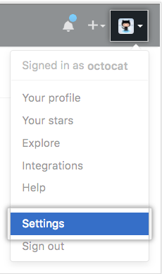
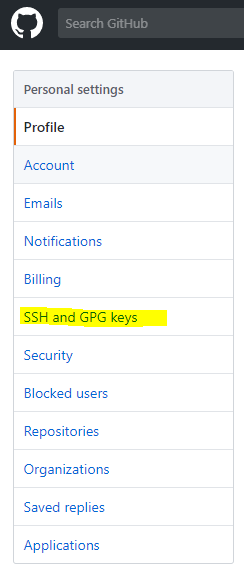
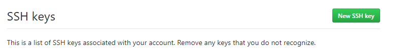
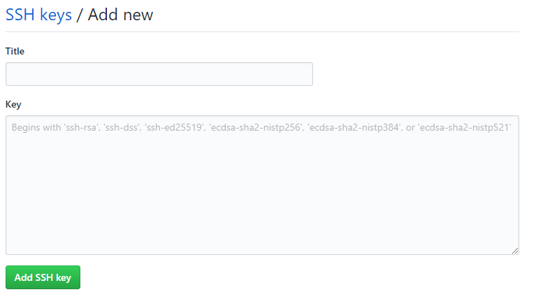

This is the answer to "How to install Git locally?"
Before you start this process, create an account on Github at https://github.com/.
This will install a Folder with a number of file and programs.
Open a bash window (terminal on Mac or 'git bash' on Windows) and type in
git --version
This should return a confirmation that git is installed with a version number.
Without SSH connection setup you will have to enter your username and password every time you connect to Github, which you will usually have to do during a git push command. By sharing your workstation public key with Github, you will not have to provided username and password to connect.
Open a bash session (terminal on Mac or 'git bash' on Windows). All commands below should be entered into the bash session.
Check to see if you already have a private key/public key setup by listing any files in the hidden direction .ssh.
ls -al ~/.ssh
If you don't see any of the following files you will need to create the key files
You only need to do this step if you don't already have public/private key files.
You ll first create the key files using the email you provided to Github. This will label the keys with that email.
ssh-keygen -t rsa -b 4096 -C "your_email@example.com"
Generating public/private rsa key pair.
Next you'll be prompted to enter a file name for your keys and you can just press enter to accept the default.
Enter a file in which to save the key (/c/Users/you/.ssh/id_rsa):[Press enter]
Finally, you'll be prompted to enter a passphrase. This is a security feature and you will have to enter this passphrase when you connect to Github, so be sure to remember it. It can be as simple as a four digit pin number.
Enter passphrase (empty for no passphrase): [Type a passphrase]
Enter same passphrase again: [Type passphrase again]
The SSH Agent is a process that will allow you to manage SSH Keys. You'll start that process and add your keys with the following command.
eval $(ssh-agent -s)
You will see a response like this indicate that the process is running.
Agent pid 59566
The command below adds your key to the ssh agent. If the name of your key is different replace id_rsa with the name of your key.
ssh-add ~/.ssh/id_rsa
Now you need to add the public key to your Github account. This will allow Github to decrypt the data you send it via SSH.
We start by using the clip command to copy the content of the public key SSH file to your local buffer.
clip < ~/.ssh/id_rsa.pub
If the clip command is not installed you can list the file to the console and then copy the contents into your buffer with ctrl-c/cmd-c. The cat command will list the file to the console.
cat ~/.ssh/id_rsa.pub
You can also open the file with a text editor and copy the content into the buffer if you have trouble with the clip command.
Next, go to your Github account online and click on your photo. This will reveal a dropdown selection where you should select Settings.

The Setings menu will appear on the left of the screen and from there you will click on SSH and GPG keys.

After you click on SSH and GPG keys you, you will you click on a button to add a new key.

Click on the Green button to add the key you have in you buffer. You should see a form. Enter a Title that help you to remember the workstation you got the key from and then paste the key into the key textarea. Finally click on the Add SSH key to add it to the list of keys known to Github.

The local Git program maintains configuration data about you that should correspond to your account on github.com. You'll want to provide the email and user name that you used for github.com in when you execute the following commands.
git config --global user.name "Mona Lisa"
git config --global user.email "email@example.com"
You can execute these commands to verify that you have set up the config variables properly.
git config --global user.name
git config --global user.email
You can make Visual Studio Code the default editor for git. If you ever forget to close the quotes when adding the message during commit (git commit -m"update) you find that git open up the default editor.
Before running the git config to set VS Code as the default editor, check that the application is in your computer's path so that it can be found. You can check this by going to the command line and running.
code --help
If a list of help topic is printed to the screen, the VS Code is in the path. If not investigate how to get VS Code into the Path. If in the path execute the following in the command line.
git config --global core.editor "code --wait"
test with this: git config --global -e
If you set up, the command above will open the .gitconfig file which is where git stores its config variable in VS Code.
See the answer to a question about this on Stack Overflow for more information: Editor For Git]
How to Use Visual Studio Code as Default Editor For Git
Additional References
https://help.github.com/articles/connecting-to-github-with-ssh/